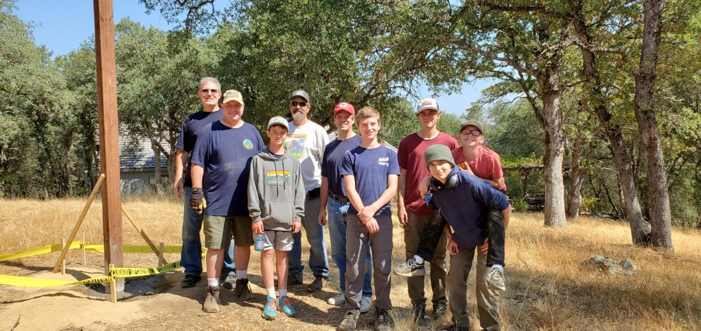
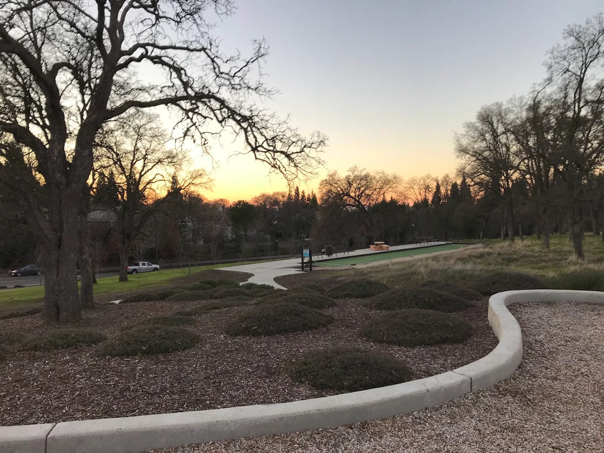
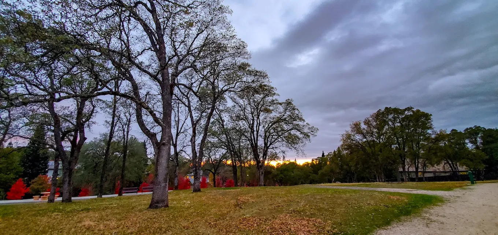
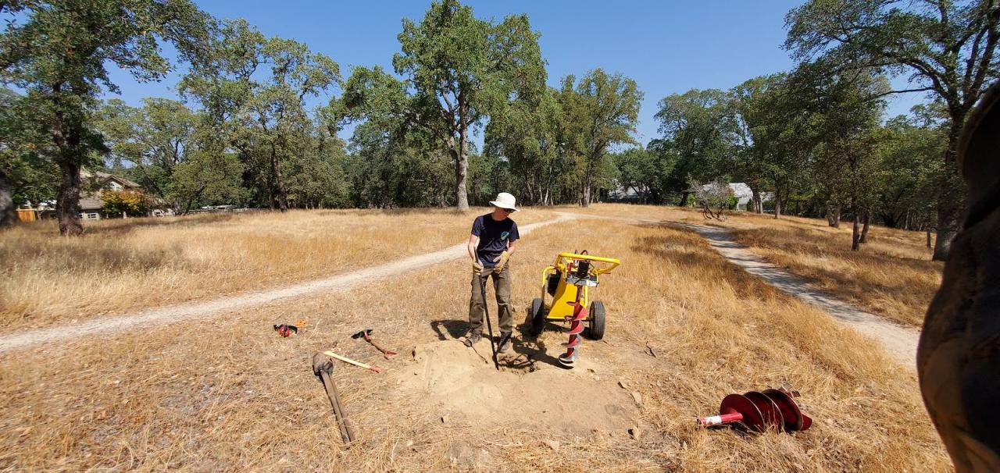
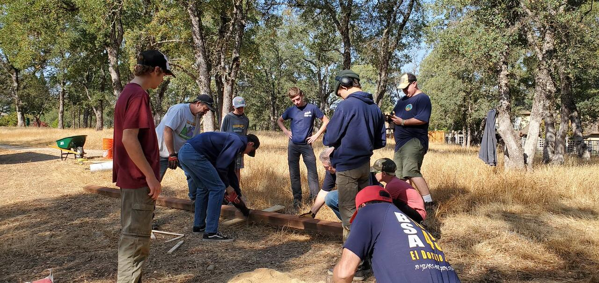
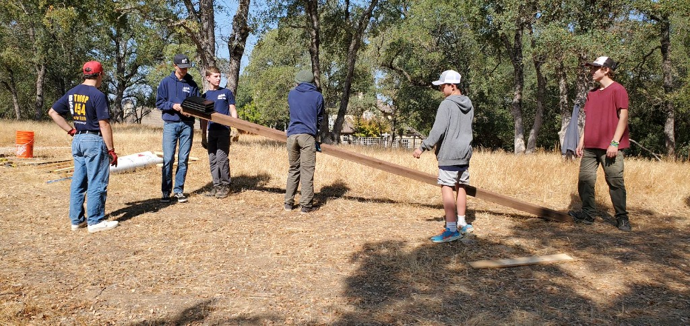

Scouting America • Troop 454 • Golden Empire Council
Eagle Scout Service Project Portfolio
Wildlife Habitat & Conservation Initiative ("Gone Batty")
Beneficiary: El Dorado Hills Community Services District (EDH CSD) • Lake Forest Park, CA
The "Gone Batty" Mission
Enhancing the Lake Forest Park ecosystem through the design, fabrication, and safe elevation of predator-proof bat conservation structures.
The Ecological Need & Benefit
Bats are indispensable keystone mammals that deliver crucial ecological services: they pollinate native flora, disperse seeds, and consume up to 1,000 crop-damaging insects and mosquitoes per hour. This provides safe, organic pest control for park visitors and surrounding neighborhoods without chemical pesticides. However, residential expansion across El Dorado Hills has diminished natural tree hollows and roosting sanctuaries.
Project Goal & Scope
My objective was to plan, finance, engineer, and lead the installation of two heavy-duty, predator-proof bat conservation houses at Lake Forest Park. The project provided a safe, thermal-regulated sanctuary away from domestic and wild predators, offering a protective nursery for female bats to roost and raise their young pups.
The Beneficiary Partnership
Partnered directly with CSD Parks Representative Chelsea Harrison to conduct site feasibility assessments, obtain formal municipal approvals, and guarantee sustainable long-term stewardship of the conservation structures for our community.

Precision Ecological Engineering
Engineered specifically to maximize bat colony adoption, pup survival rates, and structural longevity.
Mounted 12 feet high on 20-foot heavy posts to create a 100% barrier against cats, raccoons, and snakes while providing clear drop-flight paths.
Strategically pointed Southeast (135°) to absorb 6–8 hours of vital morning sun, generating the 85°F–100°F internal temperatures needed for bat nurseries.
Constructed with naturally dark-toned, pressure-treated 4"x6" timber to retain radiant heat overnight without requiring toxic synthetic paints.
Deep augered post holes anchored with sledgehammer-driven steel rebar pins and 10 bags of fast-setting concrete with water runoff crown slopes.
Leadership & Project Impact
Verified metrics from the official Eagle Scout Service Project Report.
Includes 83.5 leadership hours (67.5 planning + 16 execution) and 50 volunteer service hours.
100% self-funded via troop tree-pickup earnings & local business sponsorships; $0 cost to the beneficiary.
5 registered youth scouts, 4 adult scouting volunteers, and 1 community parent directed safely on site.
Flawless safety record with pre-work rattlesnake sweeps, PPE enforcement, hydration stations, and tool protocols.
Project Phases & Milestones
From initial ecological research to final municipal sign-off and community handover.
Proposal, Ecological Research & CSD Approvals
Researched bat roosting biology, maternal nursery temperature requirements, and flight clear-zones. Conducted on-site surveys at Lake Forest Park with EDH CSD representative Chelsea Harrison. Authored the comprehensive Eagle Scout Project Proposal with hazard risk mitigation plans, securing unanimous approval from EDH CSD, Scoutmaster Keith Underwood, Unit Committee Chair Denise Johnson, and District Advancement Chair Eric Miller.
Budgeting, Procurement & Community Partnerships
Self-funded project costs using earnings from the unit's annual Christmas tree pick-up event. Secured material donations and discounts: ProBuilders (Placerville) donated two 4"x6"x20' pressure-treated posts, Steve's Pizza donated family-sized pizzas for volunteers, and Home Depot provided material discounts. Staged tools, Kenley bat boxes, concrete mix, safety glasses, gloves, first aid kit, shade canopy, and water coolers.
Site Prep, Hydraulic Auger Digging & Structure Elevation
Rented a towable hydraulic auger to overcome exceptionally hard, rocky soil the day prior. On workday morning, conducted a safety briefing and perimeter rattlesnake sweep. Supervised volunteer teams in pre-assembling bat boxes onto 20-ft timber posts, driving steel rebar reinforcement pins with adult assistance, hoisting and plumbing the 20-ft assemblies using guide stakes, connecting directly to EDH CSD park water, and pouring 10 bags of fast-setting concrete with water-shedding crown slopes.
Curing Inspection, Site Cleanup & Community Handover
Returned to site after concrete cured to inspect structural stability, remove wooden bracing stakes and caution tape, and conduct a full grounds cleanup and trash sweep. Returned extra rebar and tube forms to Home Depot. Finalized project workbook accounting, prepared donor thank-you cards with on-site photos, and officially presented the active conservation structures to the El Dorado Hills community.
Project Gallery
Key milestones documenting site selection, technical fabrication, volunteer leadership, and the finished installation.

Site SelectionLake Forest Park Site
Surveyed open meadow perimeter at Lake Forest Park to ensure uninhibited flyway clearance and Southeast morning sun exposure.

ExcavationAuger Drilling & Rebar Pins
Utilized a hydraulic towable auger and sledgehammer-driven rebar to penetrate dense rocky foothill soil and anchor 20-ft posts.

Team LeadershipSupervising the Crew
Organized volunteers into balanced teams for hardware fastening, structural plumb alignment, and safety perimeter enforcement.

Completed12-Ft Conservation Roost
Two predator-proof bat houses elevated 12 feet high facing Southeast, providing thermal heat retention and safe nursery roosting.
Project Reflection
Key personal takeaways on directing teams, solving complex on-site challenges, and delivering community value.
Leading a Mixed Team of Adults and Youth
The most defining leadership lesson of this project was learning how to effectively direct, organize, and support a team consisting of both youth scouts and adult volunteers. Prior to my Eagle project, my leadership experience was focused primarily on youth (such as serving as a Counselor in Training at Camp Wente). Leading adults required clear communication, mutual respect, and well-organized task delegation.
I learned that my primary responsibility as the project leader was not to swing every hammer or dig every inch of dirt myself, but to supervise the operation: ensuring teams were divided by equal ability, maintaining safety parameters, verifying structural plumb and orientation, and keeping volunteers motivated and well-supplied.
Field Engineering & Overcoming Obstacles
On-site conditions rarely follow a textbook plan. Our biggest physical obstacle was the ground composition at Lake Forest Park, which was exceptionally dense, rocky, and compacted. Attempting manual excavation would have exhausted volunteers and jeopardized our timeline.
To solve this, I adapted our strategy by renting a towable hydraulic auger the day before the main build. When we discovered additional bedrock layers, I coordinated with adult volunteers to drive heavy rebar pins with sledgehammers to securely anchor the posts. Furthermore, rather than exhausting volunteers carrying dozens of 5-gallon water buckets across the field, I coordinated with the EDH CSD Parks team to connect directly to the park's municipal water hose supply.
Public Agency & Community Collaboration
Collaborating with the El Dorado Hills Community Services District, local businesses like ProBuilders and Steve's Pizza, and Troop 454 showed me how much a community is willing to support youth initiative when plans are transparent, well-researched, and professionally presented.
"The most rewarding part about being the leader of my Eagle Scout project was seeing the project come together from months of planning and having everyone work together as a team to create a lasting conservation impact for our community."
Contact & Verification
Documentation, official workbook verification, and Eagle Scout Board of Review records: